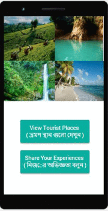
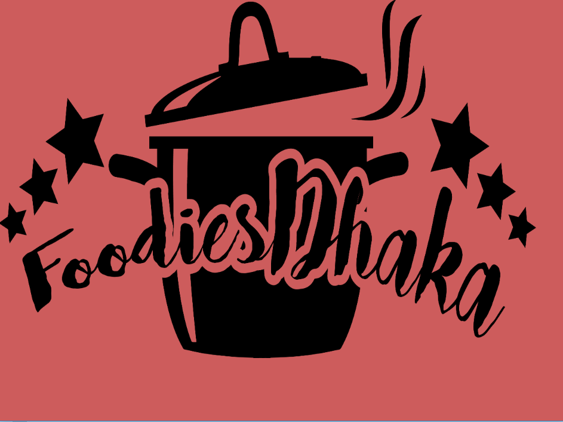

Selected Projects
A selection of my recent research and development projects.
Policy Distillation for Offline ITS with Meta-RL
Combined PEARL with multi-policy distillation to transfer knowledge from strong to weak tutors; improved AUC by +0.06 and stabilized OPE under distribution shift. This project addresses the challenge of adapting tutoring policies across different educational contexts using limited interaction data.
Decision Transformer for ITS (Delayed Rewards)
Modeled student trajectories as return-conditioned sequences; reduced final score MAE by 11% vs. LSTM baselines. This work demonstrates the effectiveness of transformer architectures for handling long-term dependencies in educational sequences with delayed reward signals.
GNNs for Gait (Prosthetic IMU)
Spatio-temporal graphs and graph transformers for terrain classification; achieved +9.4% F1 over CNN baselines. This project applies graph neural networks to analyze IMU sensor data from prosthetic limbs for improved gait recognition and terrain adaptation.
Adversarial DQN for Algorithmic Trading
Implemented robust DQN under corrupted/noisy rewards; benchmarked stability w.r.t. reward perturbations and market regime shifts. The system reports Sharpe/Sortino ratios, max drawdown, and win rate metrics to evaluate trading performance under various market conditions.
Wildfire Detection from Drone Imagery (FLAME-2)
Trained Swin Transformer and ViT for wildfire detection on FLAME-2; established baselines with clear data preprocessing/eval protocol. This project applies state-of-the-art vision transformers to early wildfire detection from aerial imagery.
Robot Navigation in ROS 2 Simulation
Trained DQN and SARSA agents for goal-directed navigation in ROS 2 Gazebo simulation; compared sample efficiency and success rate. This work explores reinforcement learning approaches for autonomous robot navigation in simulated environments.
Posture Corrector using Arduino
In this work, we developed a posture corrector android application that can detect unusual bending of the user. The application is connected with a wearable device containing Arduino and flex sensor. A user wearing a dress containing the device gets a notification in his application if he bends in a way that is harmful to his posture. Later a small physical motor was also introduced with the device that will force the user to correct his posture in case he doesn't has his phone nearby. However, the work was done for term project purpose and not commercially deployable.
BD-Tourists : A cross platform application designed for travelers inside Bangladesh
In this term project, a cross-platform application was developed for travelers inside Bangladesh. Using the app, anyone can easily find the popular tourist places in Bangladesh, see user reviews and available accommodations nearby the place, view the places with high risks and get suggestions on how to avoid them. The project was deployed using AngularJs framework Ionic for frontend and a Python Django server for backend; the communication between frontend and backend was established using a REST API.

GlowHockey using ATMega32
In this term project, an android game named glowhockey was deployed in a board containing 4 LED matrices. The gamers could use the gyro sensor in their hands to move the glowing hockey sticks in the board. The sensors and LED matrix were governed by an ATMega32 microprocessor which was programmed in C
FoodiesDhaka : A Restaurant Rating Application
In this project, an application named FoodiesDhaka was developed using JavaFX and MySQL. In this application, the app users are provided with a choice of restaurants according to different areas in Dhaka city and they can see the user reviews and ratings for the restaurants. They can also suggest adding new restaurants in the list that can be further reviewed and checked by the admin side. The communication is done using Java Networking. However, the whole project was done in the localhost for term project purpose and is not deployable commercially.
